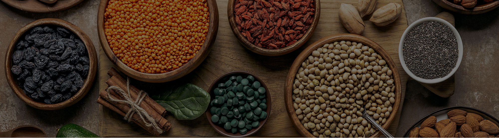

NOTICIAS
Superalimentos, superfrutas y granos ancestrales
En los últimos años existe una mayor consciencia por parte del consumidor sobre los hábitos saludables y el estilo de vida y cómo la manera de llenar la cesta de la compra repercute directamente sobre la salud y el estado de bienestar. Todo ello ha llevado a que, durante el confinamiento, los consumidores hayan optado por seguir una dieta más consciente y sostenible. El confinamiento va a marcar un antes y un después en el comportamiento del consumidor y, desde AINIA, somos conscientes de que los hábitos creados durante la crisis del coronavirus persistirán en el largo plazo.
El consumidor se encuentra en una continua búsqueda de alimentos naturales, de alto valor nutricional, ricos en fibra, minerales, vitaminas y antioxidantes, seguros y beneficiosos para la salud. Los nuevos ritmos de vida y la mayor concienciación social han creado nuevas modas, y otras preexistentes, han incremento su número de seguidores en estos últimos años, como son los superalimentos, las superfrutas y los granos ancestrales.
La salud no es una simple tendencia de consumo, sino que es una de las principales demandas de los españoles como consumidor. Según Nielsen, a finales del 2017 los españoles compraron un 4,1% más de superalimentos frente al 1,9% del total del mercado. Una tendencia que se ha acentuado durante el confinamiento impuesto para frenar el coronavirus. Son los jóvenes los que lideran este cambio, y es que casi el 80% de la población entre 25 y 34 años y el 73% de entre 18 y 24 años afirma haberse vuelto más consciente de su alimentación. A nivel general, durante la cuarentena se ha incrementado la ingesta de fruta (66%), vegetales (59%), producto fresco (49%) y de alimentos ricos en Omega3 (24%), y ha disminuido el consumo de bollería (34%) y de carne (31%), según el estudio ‘Nuevos hábitos saludables’, llevado a cabo por Upfield en España, entre una muestra representativa de 2.000 personas.
Salud, bienestar y probar nuevos sabores con tradición, son las principales motivaciones del consumidor que opta por los superalimentos. Reciben este nombre por tratarse de fuentes superiores de nutrientes esenciales, ya que de forma natural presentan una densidad muy elevada de nutrientes concentrados en pequeñas cantidades. Actualmente los podemos encontrar como alimento natural o como ingrediente de nuevos productos.
Los superalimentos se clasifican en las siguientes categorías:
Frutas: granada, bayas, arándanos, frambuesas, fresas, bayas de goji, garbanzos, uva, acai berry, hippophaes. Frutos secos: nueces, almendras, cereales. Cereales: teff, trigo sarraceno. Legumbres: frijoles rojos, cacao, batatas, adzuki. Semillas: chía. Verduras: brócoli, espinacas. Algas: espirulina, chlorella, alga kombu. Productos lácteos: kéfir, leche de burra. Hierbas: jengibre, ginkgo biloba, té. Productos de abeja: miel, jalea real, ceras. Qué y cómo comeremos en 2020? Kimchi
El Kimchi es un plato típico de Corea. Se trata de un alimento fermentado de sabor salado y picante, que le da un tono rojizo. Es conocido como la fermentación de la col china acompañada de otras verduras y muchos más ingredientes. Nos aporta excelentes propiedades como vitaminas, fibra y probióticos. En Corea se consume prácticamente a diario e incluso la UNESCO lo ha incluido en la lista de Patrimonio Cultural Inmaterial de Humanidad. Otros alimentos fermentados que podemos probar son el kéfir, el yogur, los encurtidos, la kombucha o el miso también forman parte de la lista.
Raíz de Maca
La maca es un superalimento de origenperuano que contienen propiedades nutritivas de alta calidad. Esta planta herbácea es fuente de minerales, carbohidratos, proteínas y vitaminas del grupo B, C y E. Su forma de consumo es en polvo o cocinada, ya que no se puede consumir cruda. Actualmente es tendencia por añadirse como complemento en los batidos ‘healthy’. Dentro de los superalimentos, encontramos las superfrutas y los granos ancestrales.
Superfrutas
Las superfrutas no solo poseen una mayor densidad de nutrientes, sino que también tienen propiedades superiores de antioxidantes, que ayudan a prevenir numerosas enfermedades degenerativas como el cáncer y el envejecimiento prematuro. Una de las superfrutas tendencia para este 2020 es el Açai. fruta silvestre originaria de la selva amazónica. Rica en antioxidantes y alto contenido de proteína vegetal, es un ingrediente imprescindible para los deportistas de élite. Su aspecto natural es similar al de un arándano, aunque su consumo habitualmente es en polvo, perfecto para añadir a en batidos, yogures, helados y como base de varios postres.
‘Ancient grains’ o granos ancestrales
Desde hace algunos años, existe un creciente interés de los consumidores por semillas como la quínoa y la espelta, principales componentes de la dieta prehispánica de pueblos originarios. Los granos ancestrales son un grupo de semillas y pseudocereales que apenas han sido modificadas genéticamente durante los últimos milenios, al ser menor su producción. El amaranto, bulgur, kamut, espelta, trigo sarraceno, cebada, quinoa y teff son algunos de los alimentos que forman parte de este grupo, excelentes fuentes de fibra, proteína vegetal y no contienen gluten (pseudocereales). Algunos expertos consideran que el aumento de esta demanda es a causa del creciente desarrollo de alergias alimentarias y una mayor concienciación del consumidor por los productos que consume, alimentos seguros y ecológicos.
El confinamiento va a marcar un antes y un después en el comportamiento del consumidor. En AINIA Consumer somos conscientes de que los hábitos creados durante la crisis del coronavirus persistirán en el largo plazo. Utilizar la coyuntura para construir relaciones entre la marca y los consumidores puede resultar valioso, siempre y cuando los mensajes sean productivos y positivos en un contexto de crisis y alerta sanitaria.
VOLVER